History · 1437 to 2027
Floods and the flood scheme
Six centuries of flooding, and the scheme being built to stop it.
A river that floods
The Poddle has always flooded. The cathedral records run from an inquiry in 1437 to boats being rowed past St Patrick’s in 1701. In the suburbs, serious floods struck Harold’s Cross and Kimmage in 1986, 1993, 2000, 2008 and 2011, and Blackpitts flooded during Hurricane Charlie in 1986.
Timeline of known floods
Every flood we have found a record of, with its source. Dates marked approximate are ones the sources give only roughly. Where sources disagree, both versions are given. Many smaller floods were never reported, so this list is not complete; if you know of one, please get in touch.
- 1437St Patrick’s Cathedral: the first recorded inquiry into the blocked river flooding the cathedral and its precincts.Source: Ronan, JRSAI, 1927, p. 45; see St Patrick’s
- 1493 to 1664Patrick Street and the cathedral: Acts of Parliament in 1493 and 1664 order local people to keep the watercourses clear because of repeated flooding. No single flood is described. approximateSource: Ronan, JRSAI, 1927, p. 45
- 1701St Patrick’s Cathedral: a flood bad enough for people to row a boat past the cathedral.Source: Cathedral histories, summarised on our St Patrick’s page. Ronan lists an Act of 1701 against the nuisance.
- 1744St Patrick’s Cathedral: services move to Christ Church because of flooding.Source: Cathedral histories, summarised on our St Patrick’s page. Not in Ronan’s list.
- 1778 to 1796St Patrick’s Cathedral and Patrick Street: more major floods. Sources disagree on the years: cathedral histories give 1778, 1791 and 1795, while Ronan’s list of floods and Acts gives 1762, 1778 and 1796. Ronan says that “on several occasions” the water rose five feet inside the cathedral and boats plied in Patrick Street. approximateSource: Ronan, JRSAI, 1927, p. 45; St Patrick’s page
- Jan 1784Patrick Street, the Close, Ship Street, Lower Castle Yard, Dame Street, Crampton Court and Crane Lane: melting snow and heavy rain flood the Liffey, the Dodder and the Poddle together. A 1931 retrospective says the Poddle rose six feet at the cathedral.Source: “Floods in Dublin”, Crumlin and Walkinstown History Group, reprinted in the Belfast News-Letter, 6 January 1934; “Dublin Floods of Former Days”, Crumlin and Walkinstown History Group, 13 September 1931
- Mar 1787New Street near Kevin Street: the river makes the street impassable and people are carried across in “Noddies”, small one-horse cabs.Source: Faulkner’s Dublin Journal, 10 March 1787, quoted by Sr Ann Dominica Fitzgerald, “Down the Old Poddle”, 1973, p. 29
- Nov 1787Patrick Street, New Street to Bride’s Alley, New Row, Crampton Court and Palace Street: in a gale the river breaks out in the Lower Castle Yard. People in Patrick Street live in their upstairs rooms.Source: Newspaper report quoted by Fitzgerald, 1973, pp. 25 to 26; “When weather is wild it might be worse”, Crumlin and Walkinstown History Group, 27 January 1937
- Dec 1802The Liberties: a Poddle flood drives people out of the cellars they lived in. Heavy, continuous rain.Source: “Dublin Floods of Former Days”, Crumlin and Walkinstown History Group, 13 September 1931
- Early 1800sSt Patrick’s Cathedral: about five feet of water inside the building. approximateSource: St Patrick’s page; exact year not known
- 24 Aug 1905Limekiln Lane, Greenhills.Source: floodinfo.ie report in the Ship Street planning file (4223/18)
- Feb 1910Harold’s Cross, Mount Argus and Kimmage: the river over its banks after a week of storms and very heavy rain.Source: Irish Independent, 21 February 1910, p. 5; “Trail of the Storm”, Crumlin and Walkinstown History Group
- 3 Sep 1931St Claire’s Avenue, Harold’s Cross, and Limekiln Lane.Source: floodinfo.ie report
- Mar 1937Rutland Avenue and Rutland Cottages, Dolphin’s Barn, and Larkfield Road, Kimmage: a grating above Rutland Cottages, where the river went underground for about 400 yards, chokes in a storm. Cottages flood more than three feet deep. The night is given as a Thursday, probably 11 March.Source: “Cottages Invaded”, Crumlin and Walkinstown History Group and “Telephone Service Dislocated”, Crumlin and Walkinstown History Group, both 13 March 1937
- 21 Jan 1941A Poddle tributary at Marrowbone Lane.Source: floodinfo.ie report
- Dec 1954Terenure, behind Fortfield Road: families forced out of their homes.Source: Irish Independent, 13 December 1954, p. 9; “Poddle Forced Families Out”, Crumlin and Walkinstown History Group
- 1959The Dodder, the Camac and the Poddle all flood. No places or dates are given. approximateSource: Dublin Corporation minutes, 1959
- 11 Jun 1963Clanbrassil Street and Mount Jerome, Harold’s Cross: a cloudburst over the southern suburbs, which also flooded Grafton Street and Rathmines. Mount Merrion measured 184 mm of rain that day, the worst flooding being between Dundrum, Blackrock and Sandymount.Source: floodinfo.ie report; Brendan McWilliams, “Measuring a cloudburst”, Irish Times, 11 June 1998
- Jan 1965Mount Argus, Kimmage: the river bursts its banks in heavy rain. The exact day is not legible in the report. approximateSource: “Night of Terror for 4 Families”, Crumlin and Walkinstown History Group, 20 January 1965
- 15 Jul 1973Loder Park, Mount Argus: torrential rain on St Swithin’s Day. Two houses flood, and a resident blames the Corporation for not cleaning the river.Source: Irish Independent, 16 July 1973, p. 1; “Big Mop-Up After Floods”, Crumlin and Walkinstown History Group
- Dec 1978Templeogue: the river over its banks in the storms at the end of the year.Source: Irish Press, 30 December 1978, p. 3; “Storms Trail of Havoc Grows Longer”, Crumlin and Walkinstown History Group
- Dec 1982A report of 8 December 1982 names the Poddle among rivers that flooded homes the day before. It does not say where on the river. approximateSource: “Many Homes Hit by Flooding”, Crumlin and Walkinstown History Group
- Nov to Dec 1985Kimmage Road Lower: the culvert under the front gardens collapses and gardens fall into the river; more garden walls sink over Christmas.Source: Irish Press and Evening Press, 30 November 1985; “Flooding work is held up”, Crumlin and Walkinstown History Group, 7 January 1986; McEntee and Corcoran, The Rivers Dodder and Poddle (Dublin City Council)
- 25 Aug 1986Hurricane Charlie. From Kimmage Cross Roads to the Grand Canal 80 homes and 5 businesses are seriously affected, worst at Kimmage Cross Roads, Ravensdale, Mount Argus and Harold’s Cross. On Harold’s Cross Road the water is nearly two feet deep and eight cars are abandoned. Blackpitts floods too. The city engineer called it among the worst floods on the river since records began. A 2002 newspaper report gives the year as 1987, but the storm was in August 1986.Source: Flood scheme EIAR, chapter 8; McEntee and Corcoran, The Rivers Dodder and Poddle (Dublin City Council); “Singer, Family Trapped in Flood”, Crumlin and Walkinstown History Group, 26 August 1986
- 11 Jun 1993The river overtops its banks after about 24 hours of rain, estimated at between a 1-in-100 and 1-in-250-year event. The flood scheme website counts it among the most significant floods; the EIAR calls the flooding “relatively minor”.Source: EIAR, chapter 8; poddlefas.ie, project background
- 6 Nov 2000Kimmage: the river overflows after 103 mm of rain in 48 hours across Dublin.Source: EIAR, chapter 8
- 20 Oct 2002Poddle Park, Kimmage: water 18 inches deep in the kitchen of an 84-year-old resident, who kept watch all night.Source: “Pensioner (84) in all-night vigil to keep floods at bay”, Crumlin and Walkinstown History Group, 21 October 2002
- 5 Sep 2008Kimmage: 58 mm of rain in 11 hours. The flood scheme lists 2008 among its significant floods, but the EIAR gives the rainfall without describing any flooding.Source: EIAR, chapter 8; poddlefas.ie
- 24 Oct 2011Tallaght, Kimmage, Ravensdale Park, Harold’s Cross and Mount Jerome: up to 90 mm of rain in six hours. Screens block at the Lakelands overflow and at Gandon Hall, and the river runs overland. Our Lady’s Hospice, Greenmount Avenue, Boyne Court, Gandon Close, Mount Argus Road and Kimmage Road Lower flood. Counts differ: the planning report says over 50 properties, McEntee and Corcoran 113 premises in 11 places. A nurse from the hospice died. This is the flood that led to the flood scheme.Source: EIAR, chapter 8; flood scheme planning report; McEntee and Corcoran, The Rivers Dodder and Poddle (Dublin City Council), chapter 19; floodinfo.ie report
Floods in the newspapers
Old newspapers fill in the gaps between the big floods. In March 1787 Faulkner’s Dublin Journal reported that “the river Soulagh (or Poddle, as commonly called) has overflowed the end of New Street, near Kevin Street, to such a degree to make it impassable, so that the folks who pass that way are carried over the stream in Noddies”, the little one-horse cabs of the day. That November the floods came again: Patrick Street “presented a melancholy spectacle”, people from New Street to Bride’s Alley had to live in their upstairs rooms, and the river broke out in the Lower Castle Yard and flooded Crampton Court and Palace Street. In January 1784 melting snow and heavy rain flooded the Liffey, the Dodder and the Poddle together. On 21 February 1910 the Irish Independent reported the Poddle overflowing at Harold’s Cross. On 13 March 1937 the Irish Press described cottages on Rutland Avenue flooded about three feet deep when the culvert at Dolphin’s Barn choked. In December 1954 families behind Fortfield Road in Terenure were forced out of their homes, and on St Swithin’s Day, 15 July 1973, the river flooded two houses at Loder Park beside Mount Argus. In the storms at the end of December 1978 it burst its banks at Templeogue. Dublin Corporation’s minutes also record flooding of the Dodder, the Camac and the Poddle in 1959.
Lower Kimmage Road had a particular problem. In November 1985 the Irish Press and the Evening Press reported back gardens collapsing into the river, more were lost in 1987, and the Corporation went to tender in 1986 for about 250 metres of precast culvert to enclose that stretch. The Corporation’s minutes for 1985 to 1987 follow the story, from a report on the river at Kimmage Road Lower and the collapse of the garden of No. 9 into it, to the culverting between Kimmage Road Lower, Harold’s Cross Bridge and Parnell Road, and a report on the 1986 flooding. The newspaper reports are collected by the Crumlin and Walkinstown History Group’s Poddle project.
McEntee and Corcoran give the engineers’ side. Jack Keyes’s report of December 1986 called the Hurricane Charlie flood of that August “among the worst on this river since records began”, with 80 homes and 5 businesses flooded, worst at Kimmage Cross Roads, Ravensdale, Mount Argus and Harold’s Cross. At Lower Kimmage Road the river ran in a culvert under the front gardens of more than twenty houses; a long section collapsed in 1985, and Keyes found that only 15 per cent of the river’s course could carry a flood. The front-garden culvert was rebuilt in 1988 and 1989.
24 October 2011
On the evening of 24 October 2011, between 80 and 90mm of rain fell on Dublin in six hours. The Poddle burst its banks at Tallaght, Kimmage, Harold’s Cross and Mount Jerome. Across the Dublin region about 1,000 properties flooded, 318 roads were badly flooded, power was lost, and two people died. Both South Dublin County Council and Dublin City Council activated their major emergency plans, and insurance claims were estimated at €127 million.
On the Poddle itself, McEntee and Corcoran record, debris blocked the river screens at the Lakelands overflow and the river burst its banks and ran overland; then the screen at Gandon Hall, near Harold’s Cross, blocked too, causing widespread flooding downstream. Eleven places and 113 premises were affected, many cars were written off, and one person died.
The River Poddle Flood Alleviation Scheme
The scheme is a joint project of South Dublin County Council, Dublin City Council and the Office of Public Works, which funds it. It is designed to protect more than 800 properties against a 1-in-100-year flood, with an allowance for climate change. The estimated cost was €7 million in 2020, revised to €10 million by 2023.
Its main idea is to store water upstream rather than build high walls in the city. Tymon Lake becomes a flood reservoir behind a 220m embankment and flow-control structure, and Whitehall Park and Ravensdale Park are reshaped to hold water. Downstream, new walls go in at Whitehall Road, Fortfield Road, Poddle Park, St Martin’s Drive and a 25m wall at Mount Argus Close. An integrated constructed wetland in Tymon Park cleans the water, and floating nesting platforms on the lake are for birds.
How the scheme came about
After the October 2011 floods, consultants were appointed in 2018 and the planning application went to An Bord Pleanála in February 2020. It was approved in June 2023, the first flood scheme to go through Part 10 planning. The Office of Public Works started building in April 2024, the Tymon Lake flood storage came into use on 20 February 2025, and works began in Wainsfort and Ravensdale Park later in 2025. The scheme is expected to be finished in 2027.
Trees and wildlife
The scheme has not been uncontroversial. When it was published in 2020, local groups including Save the Poddle’s Wildlife Sanctuary objected to the number of trees to be felled and questioned the bird surveys at Tymon Lake. Some argued for moving walls back from the river to create natural floodplain, for example at St Martin’s Drive.
Watch and read
From the planning file
Facts from the flood scheme’s planning application and four local planning files.
On the walk

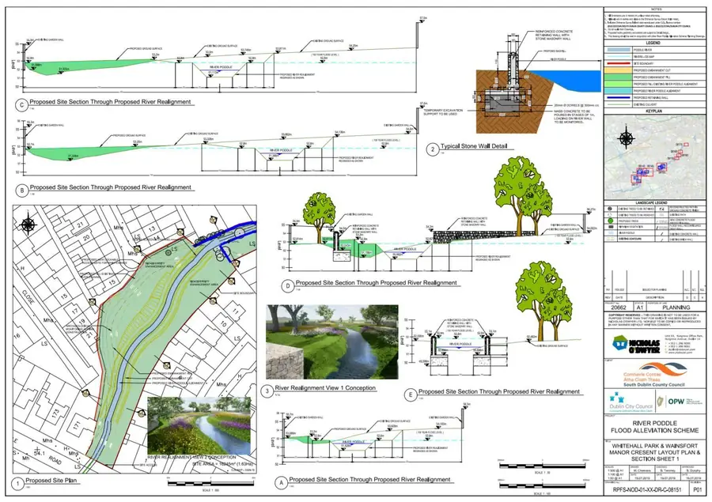

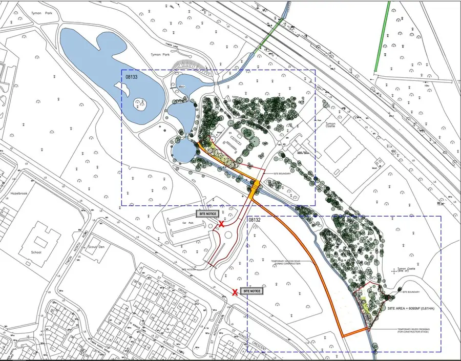

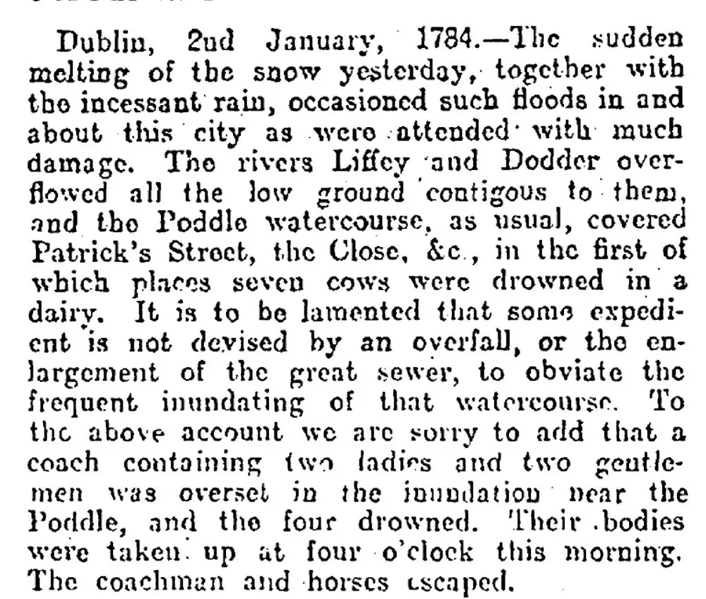

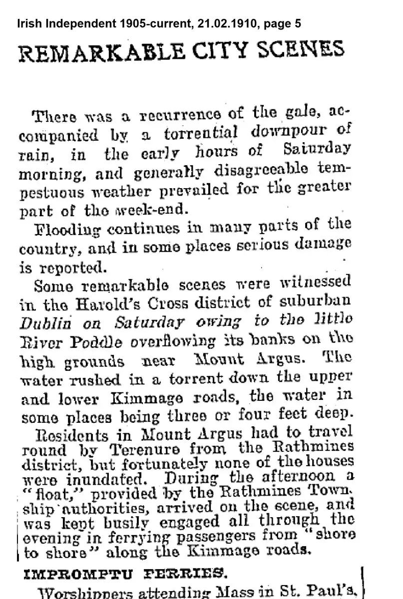

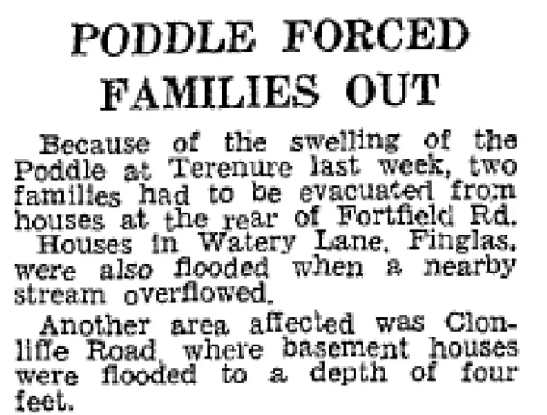

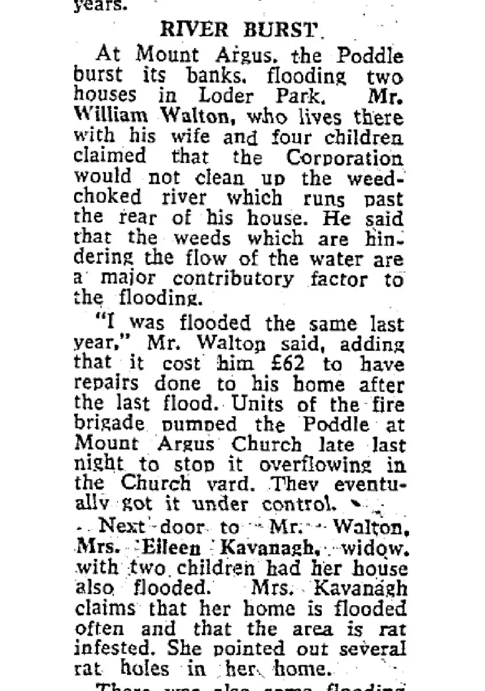

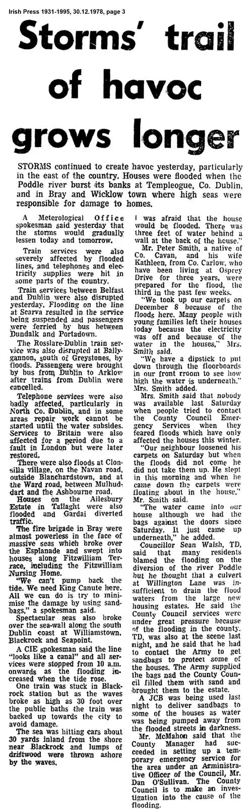

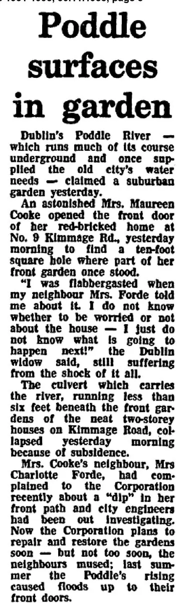

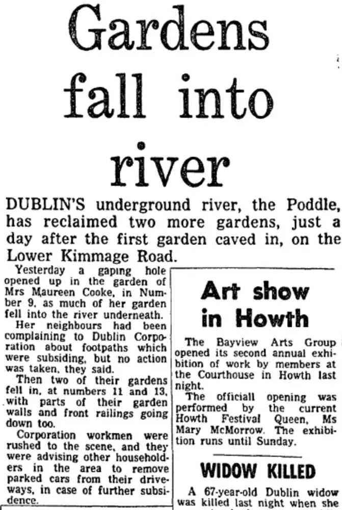

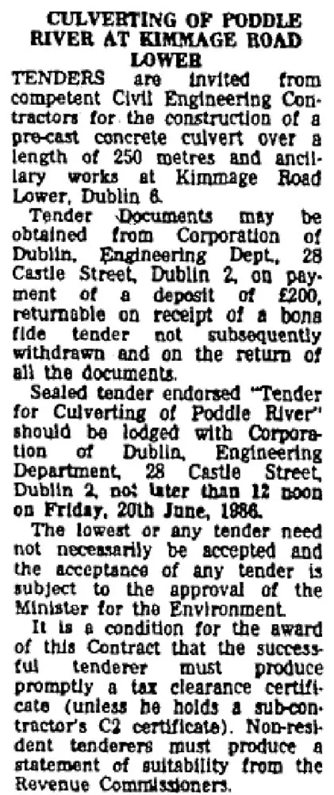

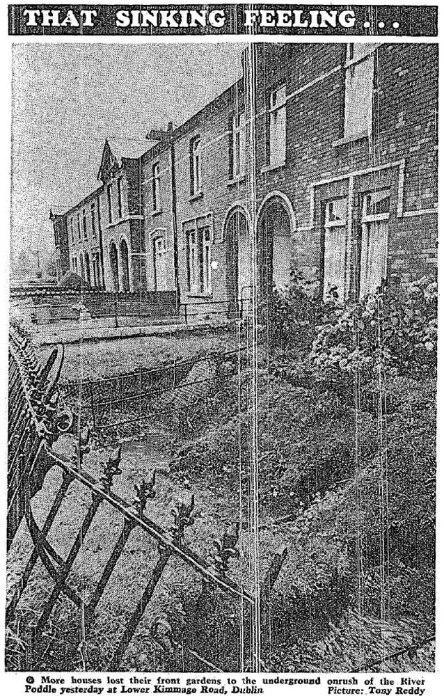